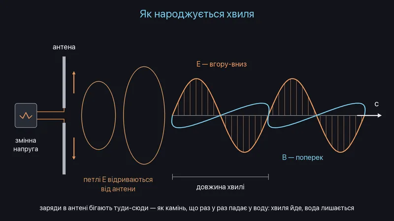

Електромагнітні хвилі і рівняння Максвелла: чому світло, радіо і Wi-Fi — одне явище
Радіостанція, роутер, мікрохвильова піч, лампа й рентген у лікарні здаються різними речами. Максвелл показав, що це одне явище — і для цього йому вистачило законів електрики й магнетизму та однієї сміливої гіпотези.
Зміст
Ідея 1: змінне магнітне поле породжує електричне
Почнемо з того, що вже відомо з електромагнітної індукції: коли магнітний потік крізь контур змінюється, у контурі виникає ЕРС — електрорушійна сила.
Максвелл подивився на це глибше. Провідник тут не головний: змінне магнітне поле породжує електричне поле скрізь, навіть у порожнечі. Це поле вихрове — його лінії замкнені, як кільця. Провідник лише показує, що поле є: у ньому починає текти струм.
Записаний для самого поля, закон Фарадея звучить так: обхід електричного поля по замкненому контуру (циркуляція) дорівнює швидкості зміни магнітного потоку крізь контур, з мінусом.
Ідея 2: змінне електричне поле породжує магнітне
Далі Максвелл припустив симетрію. Якщо змінне магнітне поле породжує електричне, то змінне електричне поле має породжувати магнітне.
До нього вважали, що магнітне поле створюють лише струми — рух зарядів. Максвелл додав друге джерело: зміну електричного поля в часі. Її назвали струмом зміщення, хоч заряди при цьому нікуди не біжать.
Найпростіше побачити це в конденсаторі, що заряджається. У проводах тече струм, а між пластинами — порожнеча, заряди її не перетинають. Але поле між пластинами росте, і навколо цього проміжку виникає магнітне поле — таке саме, як навколо проводу. Струм провідності «продовжується» струмом зміщення.
Чотири рівняння Максвелла простими словами
Разом із двома теоремами Гауса виходять чотири рівняння, які описують усю електрику й магнетизм:
| Рівняння | Що воно каже |
|---|---|
| ∮ D · dS = Σq | Потік електричного зміщення крізь замкнену поверхню дорівнює вільному заряду всередині: джерела електричного поля — заряди (теорема Гауса). |
| ∮ B · dS = 0 | Магнітних зарядів немає: скільки ліній магнітної індукції входить у замкнену поверхню, стільки й виходить. Лінії B замкнені. |
| ∮ E · dl = −dΦB / dt | Змінне магнітне поле породжує вихрове електричне (закон Фарадея). |
| ∮ H · dl = ΣI + dΦD / dt | Струми і змінне електричне поле породжують вихрове магнітне (закон повного струму, доповнений струмом зміщення). |
Позначення: E — напруженість електричного поля, D — електричне зміщення, B — магнітна індукція, H — напруженість магнітного поля. Кружечок на інтегралі означає «по замкненому контуру» або «по замкненій поверхні».
▶ Фізика 22 — лекція «Електромагнітні явища» — з 18:58: Рівняння Максвелла
Як народжується електромагнітна хвиля
Головний висновок випливає з третього й четвертого рівнянь разом. Змінне магнітне поле породжує електричне, змінне електричне — магнітне. Тож поля можуть підтримувати одне одного й бігти в просторі вже без зарядів і струмів. Це і є електромагнітна хвиля.

Візьмемо антену — два металеві стрижні, до яких підведено змінну напругу. Заряди в них бігають туди-сюди, і навколо змінюється електричне поле. Змінне електричне поле породжує магнітне, змінне магнітне — знову електричне, і петлі поля відриваються від антени й біжать геть.
Яка ця хвиля:
- поперечна: електричне поле E коливається вгору-вниз, магнітне B — поперек, і обидва — перпендикулярно до напрямку руху;
- у вакуумі E і B коливаються в такт — досягають максимуму в одних і тих самих точках;
- їй не потрібне середовище: світло Сонця долітає до Землі крізь порожнечу;
- вона переносить енергію, але не речовину. Як камінь, що раз у раз падає у воду: хвиля біжить, а вода лишається на місці.
Відстань між сусідніми гребенями — довжина хвилі λ (лямбда).
Швидкість хвилі: швидкість світла з двох «настільних» сталих
З рівнянь Максвелла випливає швидкість хвилі у вакуумі:
Тут ε₀ — електрична стала з закону Кулона, μ₀ — магнітна стала з закону Ампера. Обидві виміряли на лабораторному столі — із зарядженими кульками й котушками зі струмом, без жодного світла.
Порахуймо c
Дано: ε₀ = 8,854 · 10⁻¹² Ф/м, μ₀ = 4π · 10⁻⁷ ≈ 1,2566 · 10⁻⁶ Гн/м.
- Добуток сталих: ε₀ · μ₀ = 8,854 · 10⁻¹² · 1,2566 · 10⁻⁶ ≈ 1,113 · 10⁻¹⁷ с²/м².
- Корінь: √(1,113 · 10⁻¹⁷) ≈ 3,336 · 10⁻⁹ с/м.
- Обернене: c = 1 / (3,336 · 10⁻⁹) ≈ 2,998 · 10⁸ м/с.
Відповідь: c ≈ 3,0 · 10⁸ м/с — це швидкість світла.
Максвелл отримав це число в 1860-х роках і зробив висновок: світло — це електромагнітна хвиля. Через двадцять років, у 1887–1888 роках, Генріх Герц отримав такі хвилі в лабораторії від іскрового розряду — і виміряв, що вони відбиваються й заломлюються, як світло.
У речовині хвиля повільніша
У речовині замість сталих вакууму стоять ε · ε₀ і μ · μ₀, де ε — діелектрична, а μ — магнітна проникність речовини:
- вода для радіохвиль: ε = 81, μ = 1 → v = 3 · 10⁸ / √81 = 3 · 10⁸ / 9 ≈ 3,3 · 10⁷ м/с — удев'ятеро повільніше;
- скло: ε = 4, μ = 1 → v = 3 · 10⁸ / √4 = 1,5 · 10⁸ м/с.
Для видимого світла проникність води інша — близько 1,77, тож світло у воді йде зі швидкістю близько 3 · 10⁸ / √1,77 ≈ 2,25 · 10⁸ м/с. Проникність залежить від частоти — звідси й веселка.
▶ Фізика 22, практикум — 12 задач з розв'язанням — з 19:08: Задача 12. Швидкість електромагнітних хвиль
Шкала електромагнітних хвиль: λ = c / f
У вакуумі всі електромагнітні хвилі біжать з однаковою швидкістю c. Різняться вони лише частотою f — а отже, довжиною хвилі:
| Що | Частота f | λ = c / f |
|---|---|---|
| FM-радіо | 100 МГц = 10⁸ Гц | 3 · 10⁸ / 10⁸ = 3 м |
| мобільний зв'язок | 900 МГц = 9 · 10⁸ Гц | 3 · 10⁸ / 9 · 10⁸ ≈ 33 см |
| Wi-Fi, мікрохвильова піч | 2,4 ГГц = 2,4 · 10⁹ Гц | 3 · 10⁸ / 2,4 · 10⁹ = 12,5 см |
| зелене світло | 545 ТГц = 5,45 · 10¹⁴ Гц | 3 · 10⁸ / 5,45 · 10¹⁴ ≈ 550 нм |
| рентген | 3 · 10¹⁸ Гц | 3 · 10⁸ / 3 · 10¹⁸ = 0,1 нм |
Звідси відповідь на питання з початку: радіо, Wi-Fi, світло й рентген — одне явище. Між трьома метрами FM-радіо і 0,1 нм рентгену — десять порядків, але рівняння ті самі.
Довжина хвилі пояснює багато побутового. Антена має бути порівнянною з довжиною хвилі — тому FM-антена завдовжки з метр, а антена телефона ховається в корпусі. Сітка на дверцятах мікрохвильової печі має дірочки в кілька міліметрів — набагато менші за 12,5 см, тож хвилі печі крізь неї не проходять, а світло з довжиною хвилі 550 нм проходить вільно, і ти бачиш, що всередині.
Типові помилки
- «Хвилі потрібне середовище». Звуку — так, електромагнітній хвилі — ні: вона сама себе підтримує.
- «Висока частота — вища швидкість». У вакуумі швидкість однакова для всіх; частота змінює лише довжину хвилі.
- Префікси частоти. МГц = 10⁶ Гц, ГГц = 10⁹ Гц, ТГц = 10¹² Гц. Помилка в префіксі дає відповідь, хибну в тисячу разів.
- Струм зміщення — не рух зарядів. Це зміна електричного поля в часі, яка створює магнітне поле так само, як струм.
Коротко
- Змінне магнітне поле породжує вихрове електричне (Фарадей), змінне електричне — вихрове магнітне (струм зміщення Максвелла).
- Чотири рівняння Максвелла: заряди — джерела E; магнітних зарядів немає; змінне B → E; струми й змінне E → B.
- Електромагнітна хвиля — поля, що підтримують одне одного; поперечна, E ⊥ B ⊥ напрямку руху.
- c = 1 / √(ε₀ · μ₀) ≈ 3 · 10⁸ м/с: світло — електромагнітна хвиля. У речовині v = c / √(ε · μ).
- λ = c / f: радіо, Wi-Fi, світло й рентген різняться лише частотою.
Ще за темою: як працює трансформатор — те саме змінне поле, тільки «зловлене» в залізі.